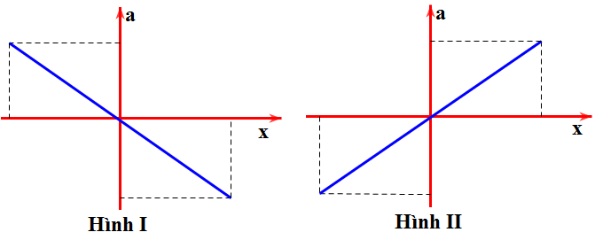
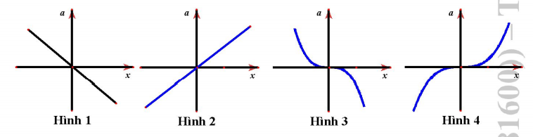

PHẦN I. Câu trắc nghiệm nhiều phương án lựa chọn
Mỗi câu có 4 phương án, chỉ chọn một đáp án đúng (0,25 điểm).
1
Một vật đang dao động điều hòa, khi vật chuyển động từ vị trí biên về vị trí cân bằng thì
2
Chọn câu trả lời đúng. Khi một vật dao động điều hòa thì vectơ vận tốc
3
Đồ thị nào sau đây cho biết mối liên hệ đúng giữa gia tốc $a$ và li độ $x$ trong dao động điều hòa của một chất điểm?


4
Đồ thị nào sau đây cho biết mối liên hệ đúng giữa gia tốc $a$ và li độ $x$ trong dao động điều hòa của một chất điểm?

5
Chọn hệ thức đúng liên hệ giữa $x$, $A$, $v$, $\omega$ trong dao động điều hòa
6
Chọn hệ thức đúng về mối liên hệ giữa $x$, $A$, $v$, $\omega$ trong dao động điều hòa
7
Một vật dao động điều hòa có $x=A\cos(\omega t+\varphi)$. Gọi $v$ và $a$ lần lượt là vận tốc và gia tốc của vật. Hệ thức đúng là:
8
Chọn câu đúng. Một vật dao động điều hòa đang chuyển động từ vị trí cân bằng đến vị trí biên âm thì
9
Khi một vật dao động điều hòa, chuyển động của vật từ vị trí biên về vị trí cân bằng chuyển động
10
Tại thời điểm $t$ thì tích của li độ và vận tốc của vật dao động điều hòa âm ($x\cdot v<0$), khi đó:
11
Phát biểu nào sau đây về gia tốc trong dao động điều hòa là sai?
12
Trong dao động điều hòa, phát biểu nào sau đây là sai?
13
Trong dao động điều hòa của chất điểm, vectơ gia tốc và vectơ vận tốc cùng chiều khi chất điểm
14
Một vật dao động điều hòa, thương số giữa gia tốc và đại lượng nào của vật có giá trị không đổi theo thời gian?
15
Li độ của một vật phụ thuộc vào thời gian theo phương trình $x=A\cos\omega t$ (x đo bằng cm, t đo bằng s). Khi giá trị gia tốc của vật cực tiểu thì vật
16
Một vật dao động điều hòa từ P đến Q xung quanh vị trí cân bằng O (O là trung điểm PQ). Chọn câu đúng?
17
Chất điểm dao động điều hòa có phương trình $x=5\cos(2\pi t-\pi/6)$ (cm). Vận tốc của vật khi có li độ x = 3 cm là
18
Một vật dao động điều hòa có phương trình $x=4\cos(4\pi t+\frac{\pi}{2})$ (cm) (t tính bằng giây). Tốc độ cực đại của vật là:
19
Vectơ vận tốc của vật dao động điều hòa luôn
20
Một chất điểm dao động điều hòa với tần số 4 Hz và biên độ dao động 10 cm. Độ lớn gia tốc cực đại của chất điểm bằng